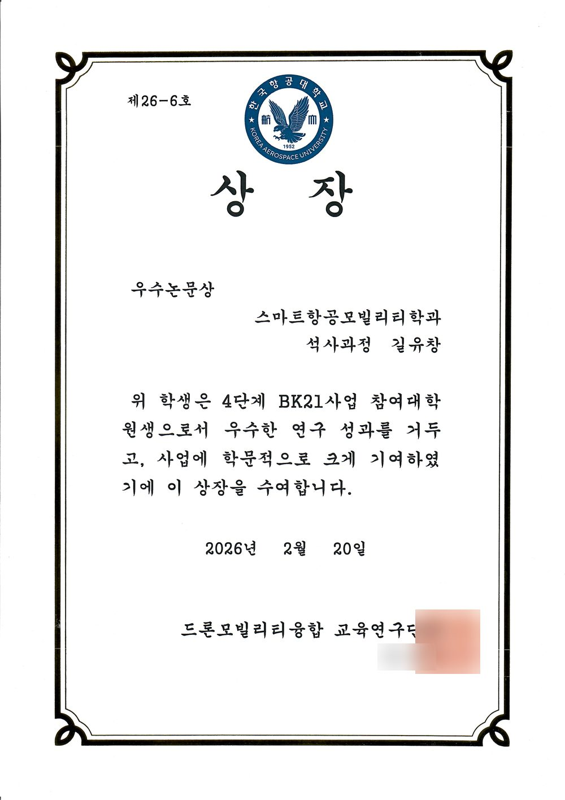
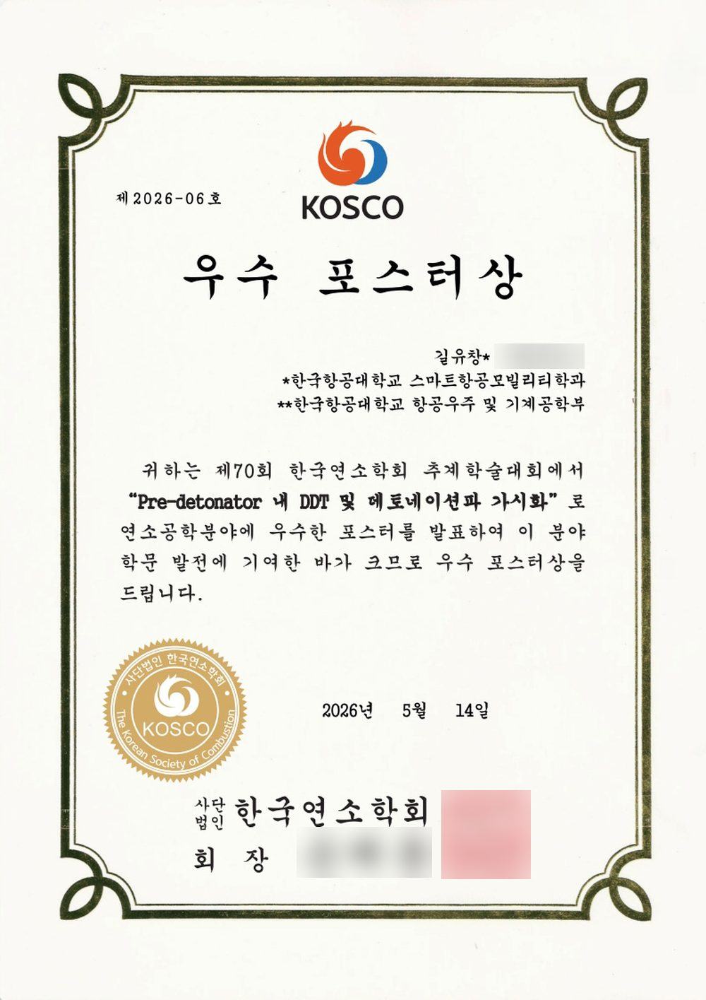
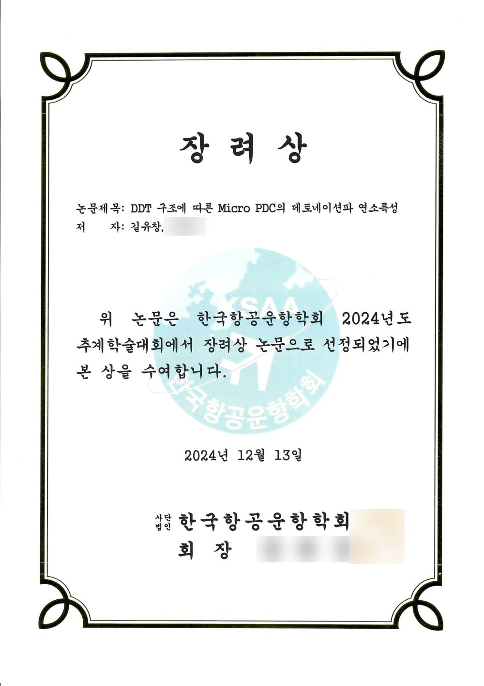
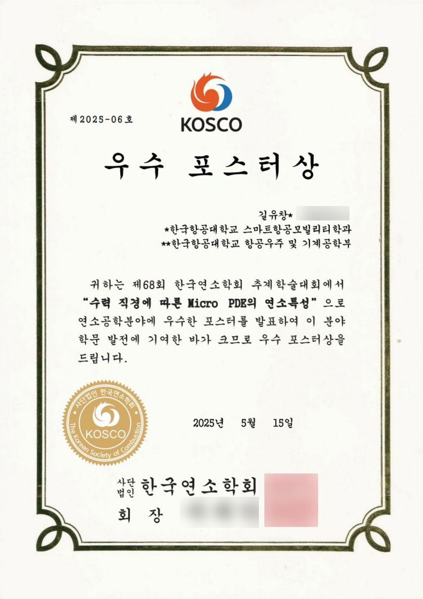
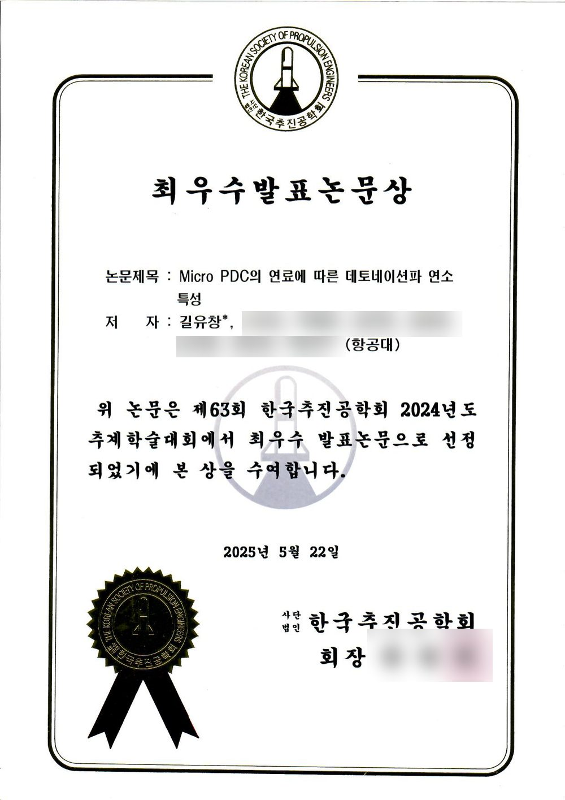
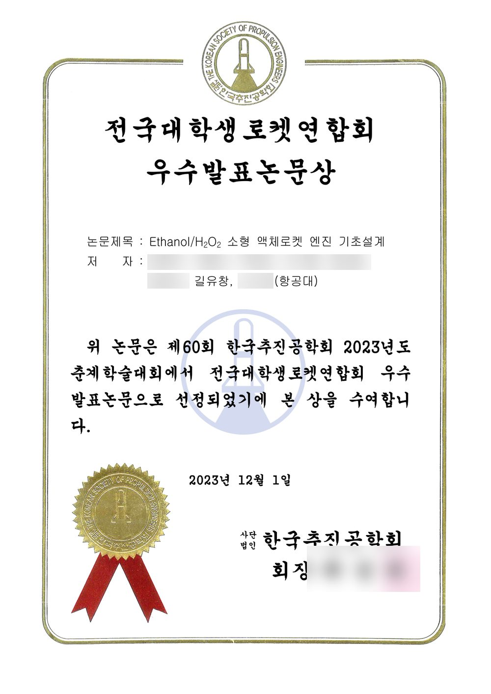

Publications & Awards
4 SCI papers, 4 KCI (Korean) papers, 6 awards, and 19 conference presentations (15 first-author, 4 co-authored)
Journal Articles
Titles link to the publisher DOI pages. (Google Scholar · ResearchGate)
SCI · Co-First Author
Distinct roles of critical pressure and temperature in supercritical heat transfer of binary hydrocarbon mixtures for regenerative cooling
Applied Thermal Engineering 295, 130652 · 2026
SCI · Co-First Author
Development of jet surrogate fuel formulated by genetic algorithm
Fuel 408, 137590 · 2026
SCI · Second Author
SCI · First Author
Impact of a Variable Blockage Ratio on the Detonation Transition in a Pre-Detonator
Fire 8(7), 263 · 2025 · Cover Article (Vol. 8 Issue 7)
KCI · Second Author
Analysis of Initial Flame Structure and Pressure Evolution in a Pre-Detonator under Varying Equivalence Ratios
Journal of the Korean Society of Combustion 31(1), 45–51 · 2026 (in Korean)
KCI · Second Author
Supercritical Heat Transfer Characteristics of a JP-8 Surrogate Fuel in a Scramjet Regenerative Cooling Channel under Different Heated-Wall Locations
Journal of the Korean Society for Aviation and Aeronautics 34(1), 26–33 · 2026 (in Korean)
KCI · First Author
Detonation Wave Combustion Characteristic by Fuel of Pre-Detonator
Journal of the Korean Society of Propulsion Engineers 29(3), 37–44 · 2025 (in Korean)
KCI · Co-Author
Current Development Status of the Polaris-1 Small Liquid Rocket
Journal of the Korean Society of Propulsion Engineers 28(6), 62–73 · 2024 (in Korean)
Honors & Awards
Feb 2026
Excellent Paper Award · 4th-Stage BK21 Drone Mobility Convergence Education & Research Group, Korea Aerospace University
Outstanding graduate research achievement in the BK21 program
Nov 2025
Excellent Poster Award · Korean Society of Combustion (KOSCO), Fall Conference
Visualization of DDT and Detonation Waves inside the Pre-Detonator
Dec 2024
Encouragement Award · Korean Society for Aviation and Aeronautics (KSAA), Fall Conference
Detonation Wave Combustion Characteristics of Micro PDC Based on DDT Structure
Nov 2024
Excellent Poster Award · Korean Society of Combustion (KOSCO), Fall Conference
Study of Combustion Characteristics of Micro PDE Based on Hydraulic Diameter
Nov 2024
Best Paper Presentation Award · Korean Society of Propulsion Engineers (KSPE), Fall Conference
Detonation Wave Combustion Characteristics of a Micro PDC by Fuel †
May 2023
Excellent Paper Presentation Award · Korean Society of Propulsion Engineers (KSPE), Spring Conference (NURA Session)
Basic Design of Ethanol/H2O2 Small Liquid Rocket Engine

BK21 Drone Mobility Convergence · Feb 2026

KOSCO Fall Conference · Nov 2025

KSAA Fall Conference · Dec 2024

KOSCO Fall Conference · Nov 2024

KSPE Fall Conference · Nov 2024

KSPE Spring Conference (NURA) · May 2023
† Title translated from Korean; no official English title was found.
Conference Presentations
May 2026
KSPE Spring Conference 2026
Injector Optimization Based on Flow Characteristics in a Linear Rotating Detonation Engine (LRDE)
Apr 2026
36th National Conference on Combustion and Energy (Hsinchu, Taiwan)
Experimental Study on the Effects of Channel Height on Detonation Transition in a Pre-detonator
Dec 2025
KSPE Fall Conference 2025
Experimental Investigation of Detonation Wave Propagation Characteristics in a LRDE
Nov 2025
70th KOSCO Fall Conference (Poster, Excellent Poster Award)
Visualization of DDT and Detonation Waves inside the Pre-Detonator
Nov 2025
70th KOSCO Fall Conference
Experimental Study of Internal DDT in a Pre-Detonator
May 2025
KSPE Spring Conference 2025
An Experimental Study on the Combustion Characteristics of a Pre-Detonator with Varying Oxidizers
Apr 2025
12th European Combustion Meeting (ECM 2025, Edinburgh, UK)
Hydraulic Diameter Effect on Detonation Wave Propagation in a Pre-Detonator
Dec 2024
KSAA Fall Conference 2024 (Poster, Encouragement Award)
Detonation Wave Combustion Characteristics of Micro PDC Based on DDT Structure
Nov 2024
63rd KSPE Fall Conference (Best Paper Presentation Award)
Detonation Wave Combustion Characteristics of a Micro PDC by Fuel †
Nov 2024
68th KOSCO Fall Conference (Poster, Excellent Poster Award)
Study of Combustion Characteristics of Micro PDE Based on Hydraulic Diameter
May 2024
KSPE Spring Conference 2024
Study of Combustion Characteristics of Detonation Waves in Micro PDE Based on Fuels
May 2024
67th KOSCO Spring Conference (Poster)
Study of Combustion Characteristics of Detonation Waves in Micro PDE Based on Fuels
Nov 2023
61st KSPE Fall Conference (Poster)
Heat Transfer Analysis of Hydrocarbon Fuels under Supercritical Conditions Depending on Fuel Composition
May 2022
KSPE Spring Conference 2022
Manufacture & Launch of Small Hybrid Rocket with Spark Ignition System
2021
NURA Conference 2021 (KSPE)
Design of Hybrid Rocket with Spark Ignition System
May 2026
KSPE Spring Conference 2026 (Second Author)
Numerical Study on Heat Transfer Characteristics in a Regenerative Cooling Channel with Thermal Cracking of RP-3 Fuel
Dec 2025
KSPE Fall Conference 2025 (Second Author)
A Numerical Study of Supercritical Heat Transfer Characteristics of Mixture Based Jet Fuel in Multichannel
Nov 2025
70th KOSCO Fall Conference (Second Author)
Numerical Study on Supercritical Heat Transfer Characteristics of JP-8 in Rectangular Regenerative Cooling Channels with Different Heated Wall
May 2023
60th KSPE Spring Conference (Co-Author, NURA Excellent Paper Presentation Award)
Basic Design of Ethanol/H2O2 Small Liquid Rocket Engine
KSPE: Korean Society of Propulsion Engineers · KOSCO: Korean Society of Combustion · KSAA: Korean Society for Aviation and Aeronautics · NURA: National University Rocket Association. † Title translated from Korean; no official English title was found.